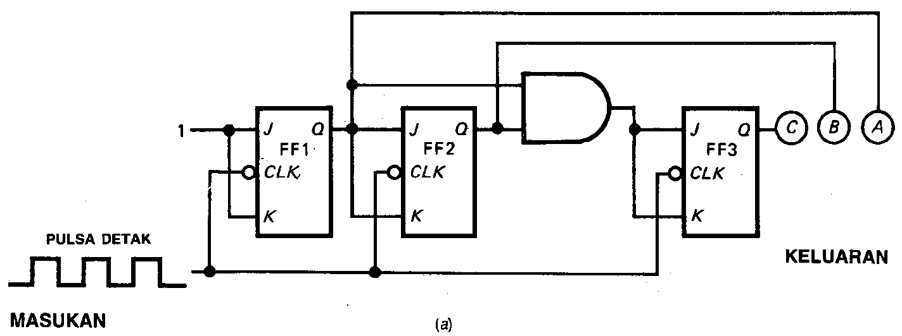
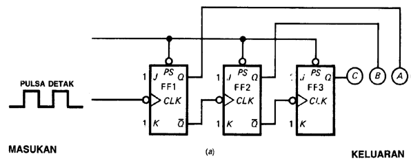
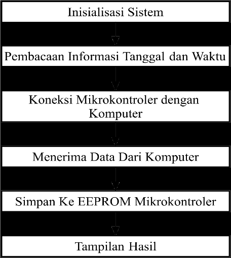
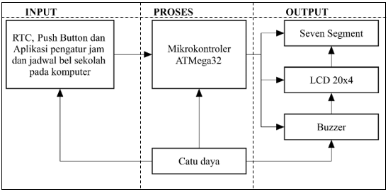
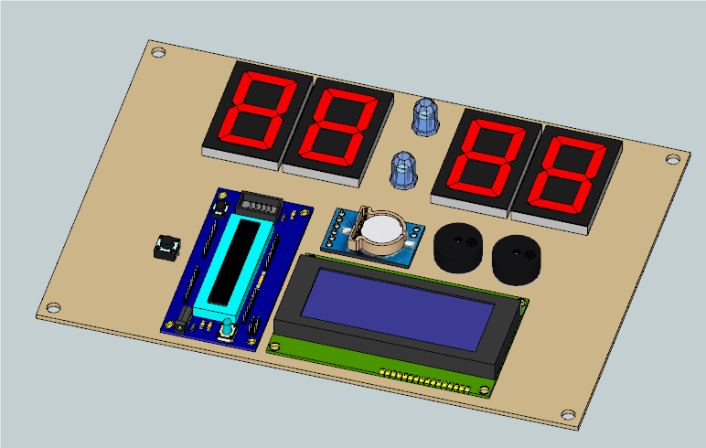
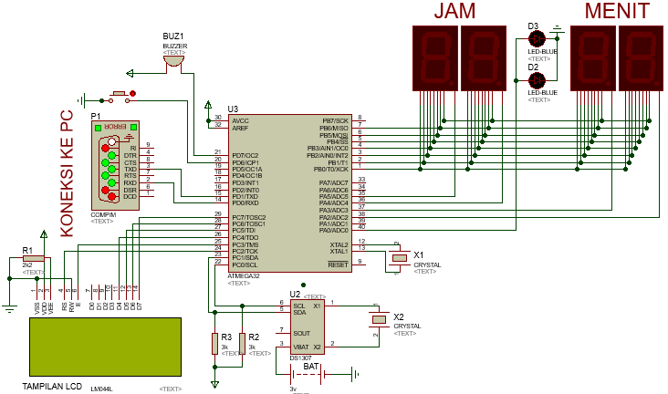

Perancangan jam digital dan system bel otomatis ini dibuat karena di Indonesia umumnya masih menggunakan bel manual, yaitu bel berbunyi ketika tombol bel tersebut ditekan oleh operator untuk pengoperasiannya dan karna faktor manusiawi terkadang bel berbunyi tidak tepat waktu sehingga proses pembelajaran tidak efisien.
Untuk menghindari hal tersebut maka dengan pembuatan sistem jam digital dan bel otomatis akan membantu meringankan pekerjaan operator atau petugas piket sekolah dan peroses pembelajaran lebih efisien.
METODE PENELITIAN
Counter (Pencacah)
Fungsi pencacah merupakan salah satu pencacahan kejadian atau periode waktu atau menempatkan kejadian secara berurutan.
Berikut diagram logika pencacah dan urutan perhitungan pencacah naik atau counter up dalam model pencacah sinkron:

Berikut diagram logika pencacah dan urutan perhitungan pencacah bawah atau counter down dalam model pencacah sinkron:

Perhitungan Bilangan Coounter Up
Wx = U incr Wx atau Xdet = Wx ++
Wx > Max x = Wx
Wx < 0 = 0
simpan :
Detik = Wx
Dimana :
Detik = data EPPROM
W = Penampungan data sementara
x = Perhitungan data tujuan (detik, menit, jam, dst)
U = Up (Data input digital sebagai count up)
incr = Penjumlahan 1 atau 1 ++
Perhitungan Bilangan Counter Down
Wx = D decr Wx atau Xdet = Wx - -
simpan :
Detik = Wx
Wx > Max x = Wx
Wx < 0 = 0
Dimana :
Detik = data EPPROM
W = Penampungan data sementara
x = Pengurangan data tujuan (detik, menit, jam, dst)
D = Down (Data input digital sebagai count down)
decr = Pengurangan 1 atau 1 - -
Berikut ini analisa perhitungan data counter up pada jam digital dan sistem bel otomatis :
a. Perhitungan data detik
Detik pada jam merupakan hitungan perdetaknya clock yang berjalan di dalam mikrokontroler. detik pada jam memiliki data konstanta 1 sampai 60 yang berjalan setiap saat,dan setelah tercapai di angka 60, maka akan kembali ke angka awal yaitu 1, proses ini disebut dalam 1 periode perputaran detik dan akan melanjutkan ke perhitungan menit.
b. Perhitungan data menit
Menit merupakan perhitungan setelah berakhirnya putaran perhitungan detik dalam 1 periode (1 sampai 60 detik). Tiap periode detik berjalan, maka hitungan menit bertambah 1 dan seterusnya. Menit pada jam memiliki data konstanta 1 sampai 60, dan setelah tercapai di angka 60, maka akan kembali ke awal yaitu 1. Proses ini disebut dalam 1 periode perputaran menit dan akan melanjutkan ke perhitungan jam.
c. Perhitungan data jam
Data jam merupakan perhitungan setelah berakhirnya putaran perhitungan menit dalam 1 periode ( 1 sampai 60 menit). Tiap periode menit berjalan, maka hitungan jam bertambah 1 dan seterusnya. Data angka pada jam memiliki konstanta 1 sampai 24, dan setelah tercapai di angka 24, maka akan kembali ke awal yaitu 1. Proses ini disebut dalam 1 periode perputaran jam dan akan melanjutkan ke perhitungan tanggal.
d. Perhitungan data tanggal
Data tanggal merupakan perhitungan setelah berakhirnya putaran perhitungan jam dalam 1 periode (1 sampai 24 jam). Tiap periode jam berjalan, maka hitungan tanggal bertambah 1 dan seterusnya. data angka pada tanggal berbeda beda tiap bulannya, sesuai dengan kalender pemerintah yang diterbitkan. Sistem yang tertanam pada IC RTC (Real Time Clock) DS3231 tersimpan data tanggal yang berlaku sampai dengan tahun 2100, data tersebut dikutip dari datasheet RTC-DS3231. Setelah proses perputaran 1 periode tanggal, kemudian akan melanjutkan ke perhitungan bulan.
e. Perhitungan data bulan
Data bulan merupakan perhitungan setelah berakhirnya putaran perhitungan tanggal dalam 1 periode. Tiap periode tanggal berjalan, maka hitungan bulan bertambah 1 dan seterusnya, data angka pada bulan memiliki konstanta 1 sampai 12, dan setelah tercapai diangka 12, maka akan kembali ke awal yaitu 1. Proses ini disebut dalam 1 periode perputaran bulan dan akan melanjutkan ke perhitungan tahun.
f. Perhitungan data tahun
Data tahun merupakan perhitungan setelah berakhirnya putaran perhitungan bulan dalam 1 periode. Tiap periode bulan berjalan, maka hitungan tahun bertambah 1 dan seterusnya, data angka pada tahun relatif, karena usia bumi tidak ada yang dapat menentukan ketetapannya.
ANALISA DAN HASIL

Berikut ini penjelasan dari algoritma sistem perancangan alat yang akan dibuat :
1. Proses mengaktifkan sistem : yaitu pertama kali sistem atau alat dijalankan pada saat catu daya dihubungkan.
2. Pembacaan informasi tanggal dan waktu : sistem akan menerima data dari RTC sebagai data acuan waktu nyata untuk menampilkan jam digital dan mengendalikan bel secara otomatis.
3. Koneksi mikrokontroler dengan komputer : yaitu saat komputer dihubungkan dengan modul USB to TTL menggunakan komunikasi serial untuk pengiriman data.
4. Menerima data dari komputer : yaitu data yang diterima berupa satu baris data-data yang memuat informasi data jam digital dan penjadwalan bel.
5. Simpan ke EEPROM mikrokontroler : yaitu semua data yang telah di konfigurasi dan dilakukan penyimpanan ke memori internal mikrokontroler agar saat sistem mati data tidak akan hilang.
6. Sistem bekerja : yaitu proses terakhir untuk menampilkan hasil yang telah dilakukan.

Blok Diagram
menjelaskan konfigurasi sistem maupun input/output sistem dimana input sistem adalah sebuah tampilan visual basic (VB) yang dimasukkan oleh user pada komputer, RTC (Real Time Clock) sebagai sumber waktu nyata dan push button sebagai on off bel ketika tidak digunakan.
Berikut penjelasan dari blok input, proses, dan output yaitu:
1. Blok Input
a. Aplikasi Pengatur Jam dan jadwal Bel
Aplikasi pengaturan jam dan jadwal bel pada sekolah merupakan bagian dari input data waktu nyata dan jadwal bel yang kemudian akan dikirim melalui koneksi USB to TTL dari komputer ke mikrokontroler.
b. RTC (Real Time Clock)
RTC digunakan sebagai input waktu nyata pada sistem, dan akan di proses sesuai kondisi sistem yang telah di program.
c. Push Button
Push button digunakan sebagai data input untuk memberi nilai yang akan di eksekusi sistem sebagai pengatur bel aktif atau tidak aktif.
2. Blok Proses
Pada blok proses yaitu mikrokontroler akan memproses input dari aplikasi pembayaran uang sekolah untuk menghasilkan output berupa tampilan jam pada seven segment, tampilan pengaturan pada LCD dan sirine aktif yang dibunyikan oleh buzzer.
3. Blok Output
a. Seven Segment
Seven Segment berfungsi sebagai penampil jam digital dengan waktu nyata.
b. LCD (liquid Crystal Display
LCD berfungsi sebagai penampil pengaturan dan info pada sistem.
c. Buzzer
Buzzer berfungsi sebagai suara dalam bentuk sirine.
4. Catu Daya
Catu daya terhubung pada semua komponen. Dimana sumber catu daya menggunakan adaptor listrik AC 220V untuk selanjutnya regulator pada adaptor akan merubah tegangan listrik 220V AC menjadi 5V DC untuk disalurkan ke semua perangkat keras pada sistem.

Gambar diatas merupakan perancangan jam digital dan sistem bel otomatis pada saat implementasi. Pada gambar ini terlihat beberapa komponen. Berikut ini daftar komponen yang terlihat pada gambar :
1. Mikrokontroler ATMgea32
2. LCD 20x4
3. RTC (Real Time Clock)
4. Seven Segment
5. Buzzer
6. Push Button
7. LED

Gambar diatas merupakan rangkaian keseluruhan sistem jam digital dan bel sekolah menggunakan teknik counter pada implementasi pencacahan bilangannya, dan menggunakan komunikasi serial dari mikrokontroler ke komputer.
Kesimpulan
1. Implementasi teknik counter pada pengoperasian pengaturan jadwal jam dan jadwal pembunyian bel dengan menggunakan model pencacahan naik dan pencacahan menurun yang mekanisme pengaturannya antara lain menambah nilai satu untuk count up dan mengurang nilai satu untuk count down.
2. Pada sistem jam digital dan penjadwalan bel otomatis terdapat data waktu nyata (real) dari RTC (Real Time Clock) pada mikrokontroler sebagai sumber waktu yang digunakan untuk data jam digital dan penjadwalan bel dengan akurat dan presisi.
3. Mikrokontroler memiliki sistem EEPROM atau sering disebut Read Only Memory yang berfungsi sebagai penyimpan data yang telah di program. Pengaturan penyimpanan semua data sistem jam digital dan penjadwalan bel pada Mikrokontroler tersimpan pada memori EEPROM dengan mekanisme setelah melakukan pengaturan pencacah lalu memprosesnya ke memori EEPROM dan tersimpan.
4. Perancangan sistem software sebagai antar muka (interface) dikerjakan dengan menggunakan pemrograman berorientasi objek dengan pemrograman basic atau software visual basic serta komponen serial port untuk komunikasi PC ke mikrokontroler dan desain-desain tampilan antar muka untuk memudahkan dalam penggunaan pengaturan jam dan jadwal bel otomatis sedemikian rupa.